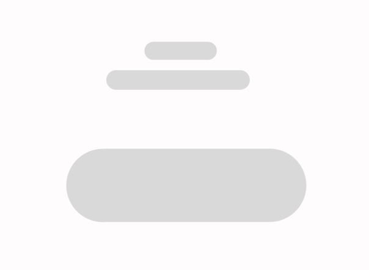
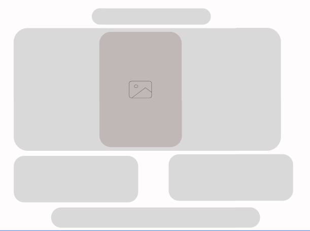
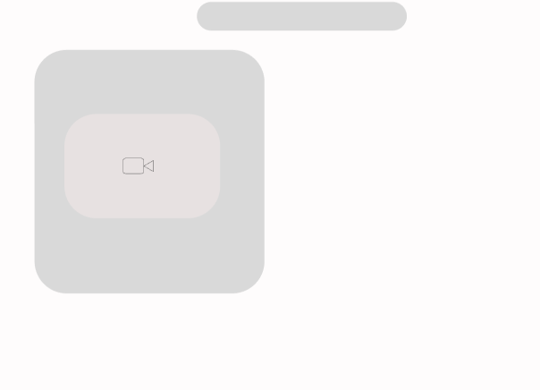
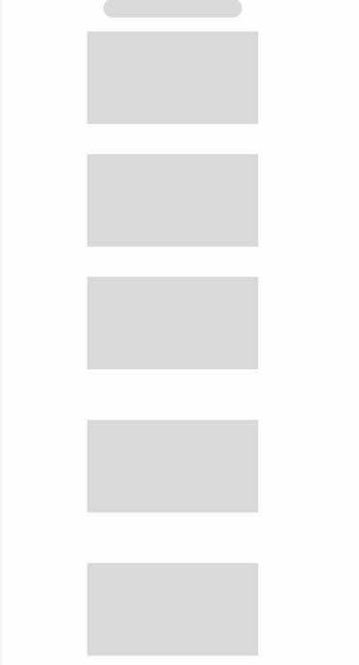

This site report shows the progress of my portfolio website for the Web Development module. The main purpose of this website is to present my skills, learning progress, and personal information in an easily understandable and organized way. I chose a beautiful dark red colour whith peach coloured boxes beacause I personally like them a lot and they make the webiste look warm and very appealing.
Home Page
This is the first pager of the website. The home page introduces the portfolio and gives a first impression to the visitors. It doesn,t contain much information as they are going to be reprenented on the upcomming pages. It is designed simple with a unique color theme.
About me Page
The second page is about me section. In this part, I've written some inforamtions about myself that includes my interests, personal qualities, and what i am currently learning. This page helps the visitors understand more about me and my background. I wanted this section to have honesty, so it actually defines who I really am.
Projects
The third page is about Projects. Since I'm just a beginner to this field, I've hot completed any projects, but I wanted to show the template from what I've learned. However, it has been kept intentionally, as it will be updated in the future when I start adding my work.
Video Page
This page includes an explanation video where I talk about my portfolio. This page plays an important role as it helps visitors understand my work more easliy and clearly.
Site Report Page
Another important page is Site Report Page , which explains the structure, content and design choices of the webiste.
Contact Page
The final page is the Contact page, where users can send me messages about confusion or questions they have related to my portfolio.
W3 validator
.png)
.png)
.png)
.png)
.png)
.png)
.png)
.png)
.png)
.png)
.png)
.png)
Concluison
While creating this website, I learned how to build web pages using HTML and CSS. The process was challenging and time-consuming, but through practice, I improved my skills. This project helped me gain confidence in web development, organize a proper portfolio, and use GitHub effectively.